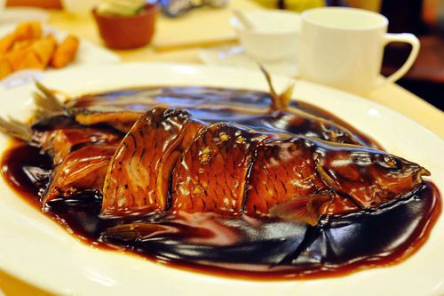
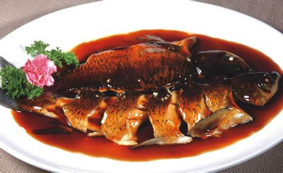
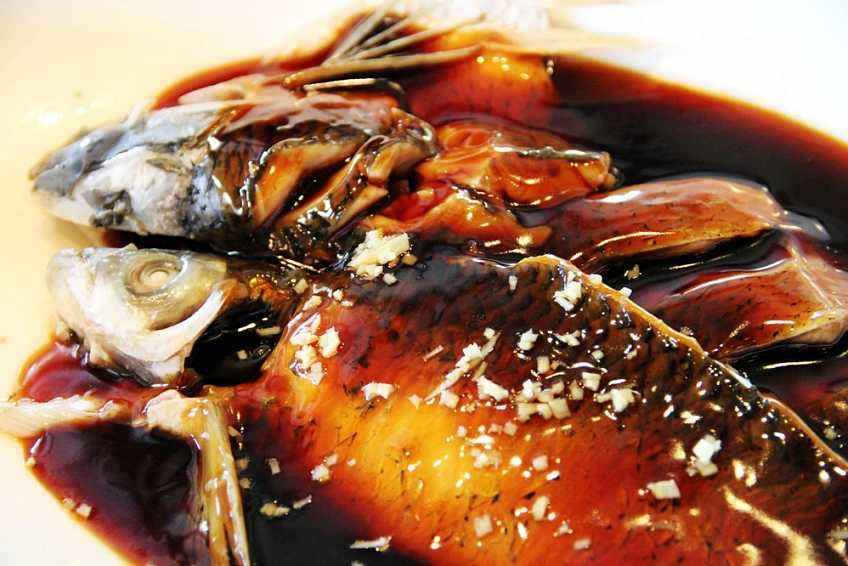

- 我的游记
- 我的点评
- 我的收藏
- 我的提问
- 我的回答
- 关注的问题
- 点赞的游记
- 消息


你还没有粉丝哦~
多发表内容优质的游记或提供优质的回答可以收获你的fans哦~
你还没有关注任何人哦~
- 当前位置
- 我的游记
- 已发表
- 草稿箱
你还没有发表过游记哦~
草稿：5篇
草稿箱空空如也~
- 当前位置
- 我的点评（共3个）
你在2018-10-13 05:56:31，点评了
美食——
“西湖醋鱼”
删除该点评
总体评分：
8分
西湖醋鱼是最正宗的西湖草鱼来做，草鱼的刺比较多，肉也没有其它价格相比较而言贵的鱼好吃细腻，但是用醋来配上草鱼就可以制作出来非常极其美味的味道。由于草鱼身上都会带一点土的味道，所以店家一般在草鱼要被做成菜的前几天，什么都不投喂，这样草鱼就会把自身的杂物排出去一些，土腥味道也就没有那么浓重了。所以我们如果想要吃到没那么土腥的西湖醋鱼的话，小编教大家一个窍门，就是在选择饭店的时候最好要看一看这家店有没有专门喂养草鱼的鱼池，如果有的话这家店做的西湖醋鱼起码要比没有的他们做的正宗。



你在2018-10-13 05:56:31，点评了
景点——
“杭州西湖风景名胜区”
删除该点评
总体评分：
8分
在杭州待了一段时间，个人觉得西湖还是蛮漂亮的，不同天气有不同的韵味，毕竟素有“晴西湖不如雨西湖,雨西湖不如夜西湖,夜西湖不如雪西湖”，但如果想把自己拍的美美的，还是选择晴天，毕竟光线较好。工作日的时候西湖苏堤白堤可以骑自行车的，建议步行加共享单车（借用后请妥善归还，不要影响交通），走走停停，来个环湖骑行，有小圈（白堤-苏堤-南山路）大圈（白堤-杨公堤-南山路）两种形式，西湖东边沿线沿湖只能步行，到雷峰塔一段有许多小景点，又可以看西湖和群山。对于断桥残雪啥的一些景点，得特定的天气去，不然就很平淡无趣。一般有两种形式俯视整个西湖，一，登雷峰塔（自南向北看），这里得说这个雷峰塔是后来新建的，缺少一种韵味，二、登宝石山（10几分钟就到山顶，登宝石流霞自北向南看）。关于人流，白堤，北山街的人一般长时间较多，同时西湖银泰周边商业气氛较浓，喜欢人多的可以去那。如果想看点不一样的西湖，建议去骑行杨公堤，看里西湖和毛家坞，时间充裕再逛逛灵隐寺等景点。最后不得不说节假日的西湖的夜景还是挺漂亮的，西湖音乐喷泉也是毕打卡的（但一般人比较多，也可以远点看）
你还没有任何点评哦~
- 当前位置
- 我的收藏
- 景点
- 美食
- 游记
你还没有收藏任何景点哦~
你还没有收藏任何美食哦~
你还没有收藏任何游记哦~
- 当前位置
- 我的提问（共3个）
你还没有任何提问哦~
- 当前位置
- 我的回答（共3个）
你还没有回答任何问题哦~
- 当前位置
- 消息
- 系统消息
- 收到的赞
- 收到的回复
2019-10-2 15:18
以下为您的反馈信息：
错误类型：景点简介
错误内容：1111111111
2019-10-2 15:18
以下为您的反馈信息：
错误类型：景点简介
错误内容：1111111111
系统消息空空如也~
2019-10-2 15:18
2019-10-2 15:18
还没有收到赞哦~
还没有收到回复哦~